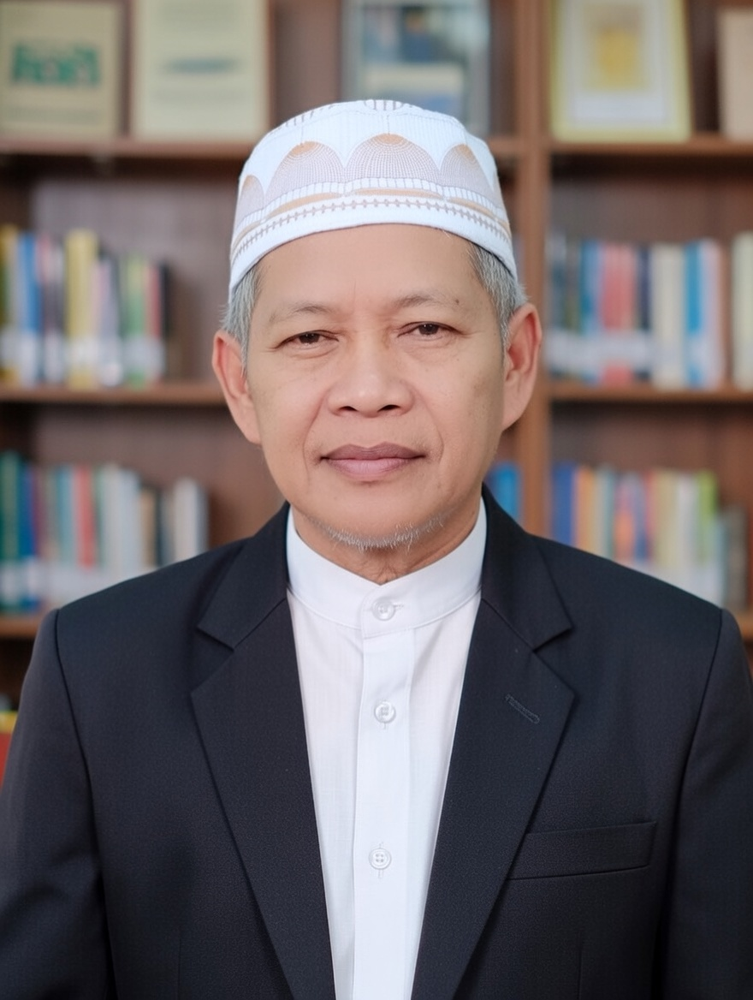

 |
| H. SUCIPTO, S.PD |

Sucipto, S.Pd adalah seorang pendidik berpengalaman yang lahir di Banyuwangi pada 8 Agustus 1963. Beliau dikenal sebagai sosok yang memiliki dedikasi tinggi dalam dunia pendidikan. Dengan latar belakang kehidupan yang sederhana dan nilai-nilai keagamaan yang kuat, Sucipto tumbuh menjadi pribadi yang disiplin, bertanggung jawab, dan berkomitmen terhadap pengabdian kepada masyarakat.
Dalam perjalanan kariernya, Sucipto mengabdikan diri sebagai tenaga pendidik dengan status Guru Honor Sekolah dan saat ini menjabat sebagai Kepala Sekolah SMP Sains Khairul Wadi Tebuireng Lombok.
Pensiunan Guru PNS Lombok Barat dengan jabatan terakhir sebagai sebagai Kepala Sekolah ini, tidak pernah berhenti mencerdaskan kehidupan bangsa meski sudah pensiun. Pada tanggal 1 Juli 2023 beliau ditetapkan melalui SK Nomor 03/YPS.KH/VI/2023 mengemban jabatan kepala sekolah SMP Khairul Wadi Tebuireng Lombok.
Sebagai Kepala Sekolah, Sucipto telah memiliki lisensi resmi kepala sekolah, yang menjadi bukti kompetensi dan kelayakannya dalam memimpin satuan pendidikan. Ia memiliki pengalaman panjang di bidang pendidikan, meskipun tidak memiliki riwayat diklat kepengawasan. Dalam kesehariannya, ia dikenal fokus pada pengelolaan sekolah, pembinaan guru, serta peningkatan mutu pendidikan bagi peserta didik.
Sucipto berdomisili di Gerung Selatan, Kecamatan Gerung. Beliau dapat dihubungi melalui telepon rumah maupun telepon seluler, serta aktif menggunakan email sebagai sarana komunikasi resmi dalam menjalankan tugas-tugas profesionalnya.